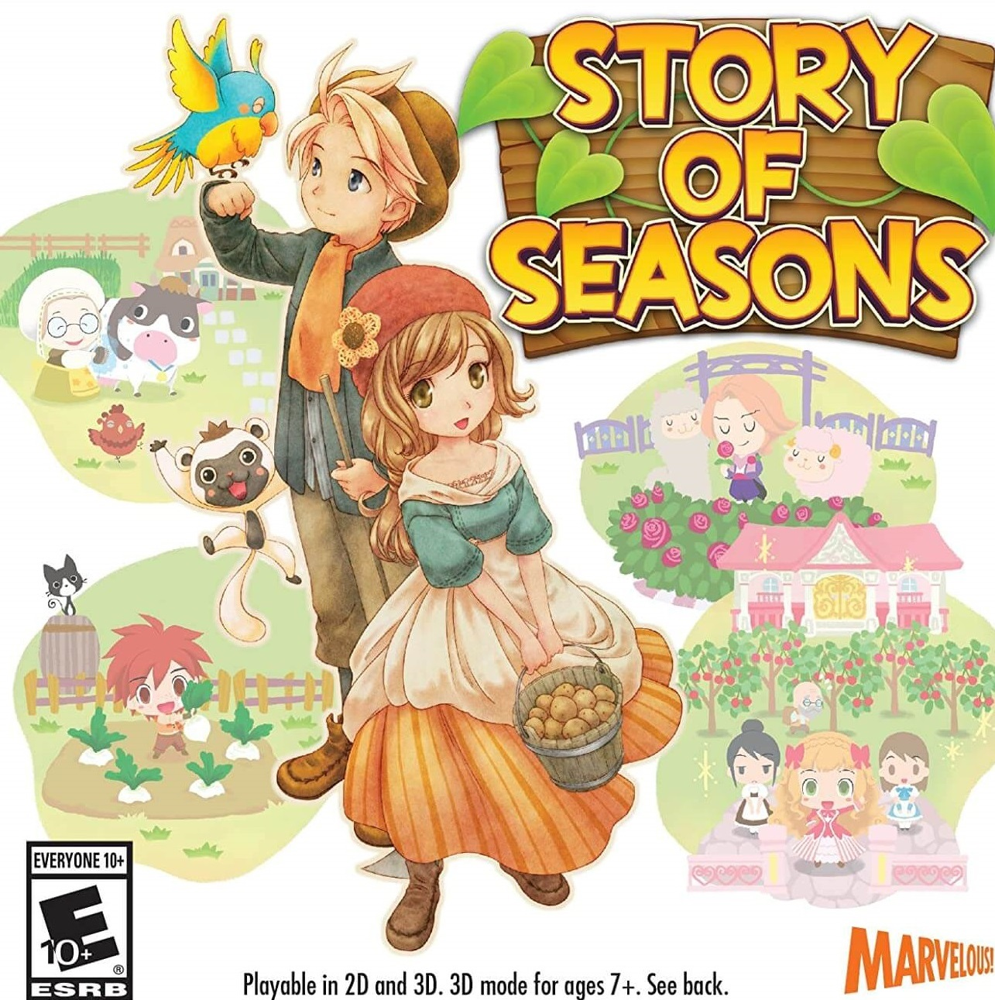

Post #1 - Jogos que eu gosto
Story of seasons
Lançado em 2014 no Japão e em 2015 nas Américas, Story of Seasons é um jogo de simulação que se passa em uma fazenda. Em um mundo inundado por jogos de simulação com compras embutidas, jogar Story of Seasons é a prova de que velhos hábitos devem permanecer. O game está disponível para o Nintendo 3DS. Em Story of Seasons, seu personagem é designado para ser um fazendeiro. O game inicia com um pequeno tutorial em uma vila, onde o jogador aprende a interagir com os inúmeros NPCs, itens e objetos. O usuário pode escolher entre o personagem do sexo masculino ou feminino. O game possui campanha completa para cada gênero. Após esses “sete dias de treino”, que passam muito rápido, o jogador finalmente pode encarar o desafio de cuidar da fazenda. A quantidade de coisas para se fazer surpreenderá quem está acostumado com jogos de simulação disponíveis para smartphones. É possível alimentar os animais, regar plantas, arar a terra, nadar, pescar e muito mais. A jogabilidade é varia entre cuidar da terra e socializar com os habitantes da vila. Ao conversar com os cidadãos locais, é possível vender alimentos produzidos na fazenda e comprar sementes, comida para animais e outros elementos para ajudar sua fazenda crescer. Também tem muito humor, conversas inúteis e até paquera entre vários personagens. Jogadores novos, acostumados a títulos free to play, vão estranhar a ausência de compras embutidas. A Story of Seasons é uma demonstração de como os jogos de simulação para celulares deveriam ser. O foco é a experiência do usuário, e Story of Seasons sabe equilibrar isso com dificuldade crescente. São dois modos de jogo, um focado no jogador mais experiente e outro nos novatos, ou quem deseja apenas relaxar. gostou me escreva com a sua opinião clicando aqui